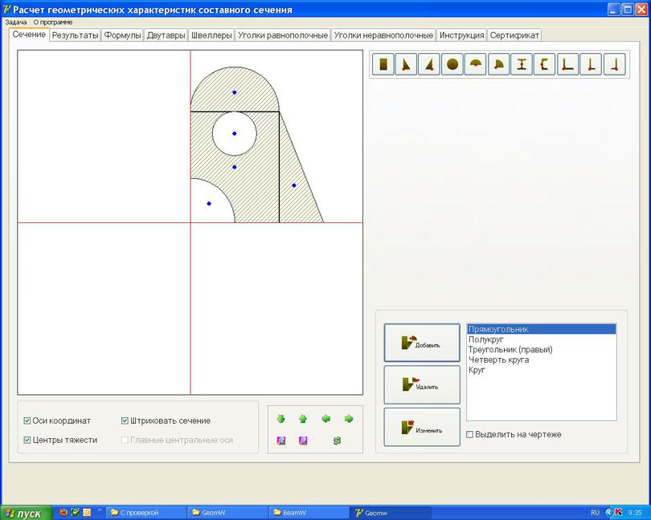

Программа предназначена для расчета геометрических характеристик сечения и может быть использована для выполнения расчетно-графической работы по дисциплине «Сопротивление материалов».
Программа обеспечивает выполнение следующих функций:
- ввод и корректировка исходных данных для расчета геометрических характеристик в диалоговом режиме;
- проверка результатов ручного расчета;
- поиск и локализация ошибок в ручном расчете;
- вывод справочной информации формулы для простых фигур, правило знака для центробежного момента инерции, сортамент прокатных профилей.
